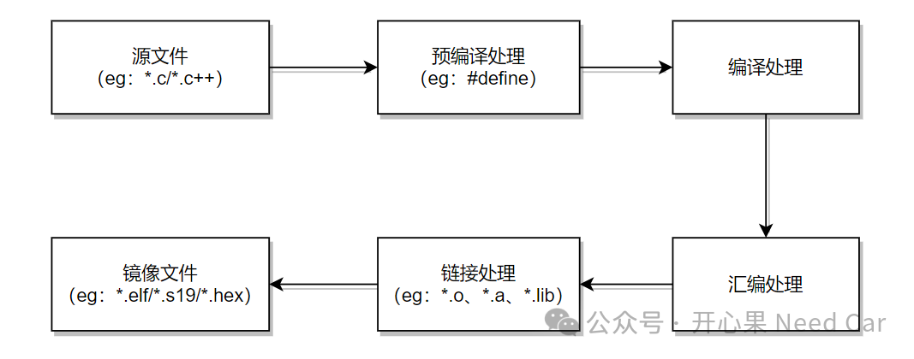
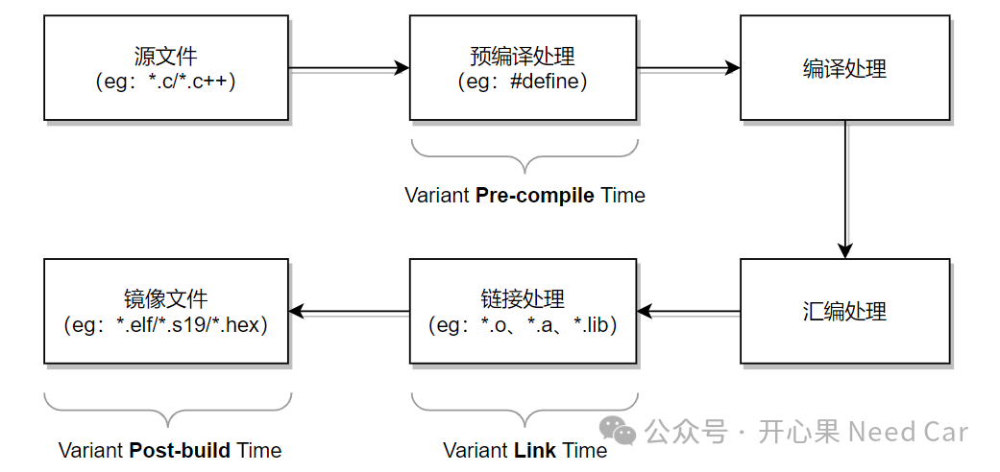
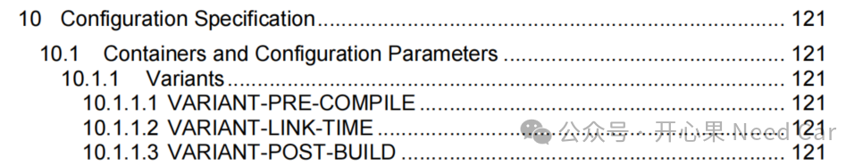
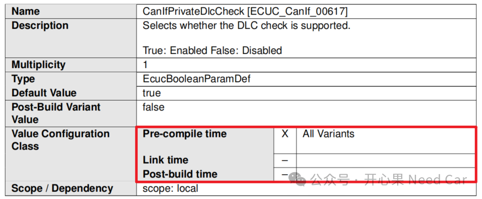
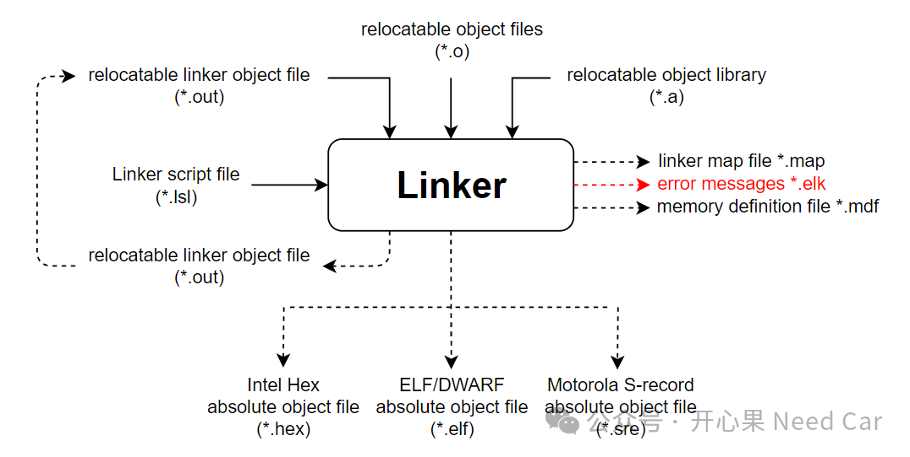

开心果 Need Car · 2024-01-29T18:33:00+08:00 · 微信原文
写在文章主题之前：仅以本文致敬我的老哥哥（陈哥，他喜欢我这样叫他，估计是为了显年轻，拉近我们之间的距离感）。陈哥70后（具体不能说哈），之所以记得这么清楚，是因为陈哥和我导师同年，所以记得深刻。陈哥和我导师还是北理同班同学，这社会，很大，有时，又那么小。
写本文的起因：陈哥，前几天"催更"。让我给讲讲PB（Post Build），起初，以为陈哥在开玩笑，因为我知道他工作内容偏向市场，对于我这样写技术细节的文章，应该不太合口味。然而，他认真的给我说，让我讲讲，因此，也就有了本文，也就拉扯了一些我和陈哥的往事。让我没想到的是：陈哥关注我2年多了，在我最开始写的时候就开始关注。我写的很多技术文章，他不一定看懂，但是，他仍在看着、思考着...见证着我的青涩与成长。
想来，和陈哥结识10个年头了。10年，倏忽而过，这期间，我们有交集，又脱离交集，感慨万千。
陈哥，为人平和，喜欢热闹，也做得一手西北菜。刚毕业的时候，我和陈哥合租，学得一些手艺，“虎皮尖椒”、"豆角焖面"等等。当然，也学会了“麻将”、"斗地主"、“台球”、“羽毛球”......
提起"Autosar"就更有渊源了，最初，我听到这个词，是陈哥聊起的。一次，陈哥捎带我导师的东西，我去代领，约在地铁里碰面，因为有一段顺路，聊到了Autosar，那时，我一脸茫然。现在想来，有种忍者神龟和师傅互换角色的感受。和陈哥关系，似有亦师亦友的感觉。10年已过，偶尔我会给陈哥打个电话，只是简单的问候，无关利益。此时。我们又处在下一个10年的历程中，陈哥，一切顺遂。---陈哥小兄弟记（2024/01/29）
提示：图片来源网络
回到本文，该怎么去理解Autosar中的PostBuild、Precompile、Linktime呢？它们在约束谁呢？
1、编译原理

2、Autosar与PostBuild、Precompile、Linktime



...uint16 idx = 0x00;if(idx= 0x00; idx < MAX_LENGTH; idx++){}...
...uint16 idx = 0x00;if(idx= 0x00; idx < 100; idx++){}...
如上是代码宏替换的场景，而Autosar中，多数是设置参数的使能与否。
工程使用场景：在代码开发阶段，可以通过配置上位机对某些功能使能或者禁用，比如：DLC（Date Length Code）检查功能使能与否。
Link Time：当源文件经过汇编处理以后，会输出中间对象文件（*.o文件），这些输出对象连同库文件（eg：*.a），经过链接器（Linker）的链接处理，才能分配到指定的内存位置。

Post-Build Time：参数在这个阶段处理，其实就是修改二进制文件中特定参数的值。一般来说，这个阶段更多的是标定功能，比如：通过XCP修改某个常量，这个常量一般与算法相关，该常量可能是某个公式的因子参数，通过标定该参数，以便于达到预期环境（工况）下的性能。
往期精彩回顾
Autosar网络管理：Partial Network基础 之 ERA/EIRA、PNC Gateway